Part A is written for SACTH and The Cause Collective and needs no technical knowledge. Where a step needs a developer, it says so. Part B is a reference for whoever maintains or hosts the website next.
All the fixes from the October security review are now part of the main version, so nothing is waiting to be merged. Since 1.1 the site has gained the five real workshops, year groups on the teacher form, a school-name search, a PDF export for staff, a confirmation email for teachers, and translations on the home page. This version also adds full step-by-step guides for going live on Railway (section 5), email (section 6), the database (section 7), languages (section 8) and personalisation (section 9), and corrects two statements in 1.1 that did not match the website (see section 11).
Pou Hono is the registration website for NZ Tech Week 2027, run by SACTH and The Cause Collective for South Auckland schools, youth groups and individuals.
A teacher registers their class and is given two things: a link and QR code to share with their students, and a private link to their own class portal. They are also sent both by email once email is switched on. Students open the shared link and register themselves, and they are grouped under their teacher's class automatically. Teachers can also type students in themselves. Individuals who are not part of a school group can register on their own. SACTH staff see everything in a password-protected admin dashboard, can download it as a PDF, and use the dashboard to check classes in on the day.
The website collects children's names, ages, year groups and allergy or health information. Rather than putting that into a third-party sign-up service, Pou Hono keeps all of it in a single database file that sits with the website itself. This is the data sovereignty reason the project exists, and it shaped most of the design decisions in this document. The one outside service it can use is an email provider, which only ever receives the teacher's own name, email address, school name and links (section 6). No child's details are emailed.
Everything below is working in the main version. Screenshots are in Appendix A.
| Who | What they can do |
|---|---|
| Anyone visiting Home, FAQ |
|
| Teachers Register page |
|
| Teacher class portal Private link |
Shows the class details (including year groups and event day), the student link and QR code again, every student signed up so far (including allergies), a form to add a student by hand, and a button to remove a student. |
| Students Shared link / QR |
A short form: name, age, year group, allergies or health conditions (optional), and a choice of one of the five workshops. Before submitting they tick a short statement about how their information is used. Works well on a phone. Students are not asked for an email address and get no email. |
| Individuals | Choose "I'm an Individual" on the Register page and fill in the same short form, without needing a school or teacher. Adults can register (ages up to 120, year group "18+"). |
| SACTH staff (admin) Admin dashboard |
Staff cannot edit or remove an individual student from the dashboard. Only the teacher can remove a student from their own class. See section 11. |
The full journey, from a teacher signing up to a class arriving on the day.
When a teacher registers, the website creates two long random codes for the class, one for each link:
| Link | Who it is for | What it can do |
|---|---|---|
…/join/<student code> | Students. Share with the class or print as a QR code. | Adds a student to that class and shows its school name. It can't open the teacher portal or show student details. |
…/register/<teacher code> | The teacher only. Do not share. | Opens the teacher's class portal: the class list, including allergies, and adding or removing students. |
There are no teacher accounts or passwords. Having the teacher code is the permission, so a teacher can start straight away with nothing to set up. The codes are far too long to guess. If a portal link is lost or shared by mistake, an admin can reset it from the dashboard: the old link stops working immediately, and the student link and QR code keep working. (The reset link is shown to the admin to pass on; it is not emailed automatically.)
Behind the scenes, everyone who registers as an individual is grouped under one shared record called "Individual / Walk-in". It never appears as a class in the admin table, and it can never open a teacher portal. Individual sign-ups are still counted in the dashboard figures and the chart, and appear in the PDF with "Individual" as their school.
The website holds children's personal and health information, so access is deliberately tight.
| Level | Can | Cannot |
|---|---|---|
| Public anyone | Register a class. Sign a student up, if they have a valid student link. | See student or teacher details. A student link shows the school name; the home page receives only a count. |
| Teacher has a portal link | See and manage their own class only. | See or change any other class, or the individual sign-ups. |
| Admin has the password | See everything, manage classes, export the PDF. | Edit or remove a single student (section 11). |
In one sentence: move the GitHub repository to an SACTH account, deploy it on Railway, and pay for Railway's Pro plan. This section explains why, and gives every step.
| Item | Current state (last checked 5 October 2026) |
|---|---|
| Web address | https://pou-hono-site.vercel.app, a free sub-address of Vercel's own domain, which SACTH cannot own. |
| What works there | Only the pages display. The server part isn't running, so registering, student sign-up, the teacher portal, admin login and the home page counter all fail. No registration data is stored on Vercel. |
| Who owns it | Deployed from the GitHub repository Melware0-0/PouHonoSite. [confirm the Vercel account and plan with the team member who set it up] |
Pou Hono keeps all its data in one database file beside the website. Vercel runs server code as short-lived "serverless" functions with no permanent disk, so registrations would fail to save or quietly disappear. Pou Hono needs a server that keeps running, with a permanent disk. Railway provides both.
| Plan | Listed price | What matters for Pou Hono |
|---|---|---|
| Pro recommended | $20 a month, which includes $20 of usage | Allows sending email over SMTP, which is how the confirmation email is built today. Volumes start at 50 GB (the database will be a tiny fraction of that). |
| Hobby | $5 a month, which includes $5 of usage | Blocks outgoing SMTP email. It would work only if a developer first switches the email to an HTTPS-based provider (section 6.3). Volumes up to 5 GB. |
| Free / Trial | $0 | Not suitable for the live site: 500 MB volumes, SMTP blocked, and very small usage allowances. |
Usage above the included amount is billed on top. Pou Hono is small (one server, one small file), so a modest bill is likely, but set a usage limit or alert in Railway's billing settings. Prices are as listed by Railway; confirm the currency and current figures at sign-up.
Sources, checked 12 October 2026: railway.com/pricing (plans, prices, volume sizes); docs.railway.com/networking/outbound-networking ("SMTP is only available on the Pro plan and above"; "Free, Trial, and Hobby plans must use transactional email services with HTTPS APIs"); docs.railway.com/reference/volumes (default volume sizes).
Railway has four regions: US West (California), US East (Virginia), EU West (Amsterdam) and Southeast Asia (Singapore). There is no New Zealand or Australian region, so the data would be held offshore, in Singapore as the nearest. This sits awkwardly with the data-sovereignty reason for building in-house. SACTH should make that call knowingly and say so in its privacy statement. If keeping data onshore is a must, use an NZ or Australian host with a long-running Node.js server and a permanent disk; the steps below still apply in spirit.
Source: docs.railway.com/reference/deployment-regions, checked 12 October 2026. Railway says more regions may be added, so check again before signing up.
Steps 1–3 are for SACTH. Steps 4–11 are best done by a developer with SACTH watching, so SACTH knows where everything is.
Melware0-0/PouHonoSite then uses Settings → Transfer ownership on the repository to move it into that organisation. GitHub redirects the old address. Developers stay on as collaborators. Agree code ownership and licence in writing; the repository has no licence file.npm start. It reads the Node.js version (22 or 24) from the project's settings file./data. Run one copy of the service only. Railway does not allow extra copies (replicas) on a service with a volume, and the database is one file in any case.| Variable | Value |
|---|---|
NODE_ENV | production |
ADMIN_PASSWORD_HASH | The scrambled admin password. A developer generates it from a new, long password (section 17). Keep the password itself in SACTH's password manager. |
SESSION_SECRET | A long random string, generated fresh (section 17). |
DATABASE_PATH | /data/pou-hono.db |
TRUST_PROXY | 1, so the attempt limits see each visitor's real address. Check it after deploying (step 10). |
PUBLIC_BASE_URL | The final address, e.g. https://register.sacth.nz. Every student link, portal link, QR code and email is built from it. |
EMAIL_ENABLED, SMTP_HOST, SMTP_PORT, SMTP_USER, SMTP_PASS, MAIL_FROM | From the email provider (section 6). Leave EMAIL_ENABLED=false until the provider is set up. |
RAILPACK_DEPLOY_APT_PACKAGES | fonts-dejavu-core, so the PDF export can print macrons and ʻokina (see the box below). |
PORT | Do not set. Railway sets it. |
db.js and push that change (section 17). This matters because the two example individual sign-ups cannot be removed through the website afterwards (section 11). If the site has already started with demo data, the cleanest fix is to delete the database file on the volume and restart with the seed switched off, while nothing real is in it.CNAME record and a TXT record. Add both at the domain's DNS provider; the domain won't verify with the CNAME alone. Railway then issues the HTTPS certificate automatically. DNS changes can take a while to spread, up to 72 hours. Do this before any real teacher registers, so no one is ever sent a link on a temporary address.The PDF needs a font with Māori and Pasifika characters (macrons such as ā, and the ʻokina). The website looks for one of a few common fonts already on the server. If none is there it falls back to a basic font and those characters print as junk. Railway's servers may not have one. Railway's build system documents the RAILPACK_DEPLOY_APT_PACKAGES variable for adding system packages, and fonts-dejavu-core is the standard package that provides the DejaVu font the website looks for. This has not yet been tried on Railway, so check it: after deploying, the server log must not contain "PDF export: no Unicode font found", and the macron test in step 10 must pass.
Sources, checked 12 October 2026: railpack.com/guides/installing-packages; docs.railway.com/builds/build-configuration.
| Asset | How SACTH owns it |
|---|---|
| Domain name | Simplest: a sub-address of a domain SACTH already controls, e.g. register.sacth.nz. Nothing to buy; whoever manages that domain's DNS adds Railway's two records. Or buy a new name (e.g. .nz or .org.nz) from an authorised .nz registrar, in SACTH's or The Cause Collective's legal name, never a developer's, with auto-renew on. |
| Source code | The SACTH GitHub organisation (step 1). |
| Hosting | The SACTH Railway account (step 2). |
| Email account | The email provider account (section 6), under the same SACTH email. |
| Passwords & keys | SACTH generates its own for production, stores them in a password manager, and enters them only in Railway. After handover, rotate them so no developer holds live credentials. |
| The data | The single database file on the Railway volume, and its backups. SACTH decides how long it is kept (section 11) and who can download it. |
Every account above uses a shared SACTH email with at least two SACTH owners, so access never depends on one person.
The email is built and tested. It stays switched off until SACTH has an email provider and has set up its domain.
Any transactional email provider will do: for example Resend (Railway's own suggestion), SendGrid, Postmark or Mailgun, or SACTH's existing email system if it allows sending through "SMTP". Compare their current prices and free allowances yourselves; Pou Hono sends one email per class, so the volume is small. Open the account with the shared SACTH email.
Pou Hono sends email over SMTP, the standard email-sending method. Railway blocks SMTP on its Free, Trial and Hobby plans; it is available on Pro and above. So there are two options:
sendEmail() in email.js, with the provider's own code (an example for SendGrid is in the comment at the top of that file). Everything else about the email stays the same. Roughly an hour or two of developer time, plus testing.Source: docs.railway.com/networking/outbound-networking, checked 12 October 2026. Railway also notes that after upgrading to Pro the service must be redeployed before SMTP works.
Emails must come from an address on a domain SACTH controls, e.g. noreply@sacth.nz. Email systems check that the sender is allowed to send for that domain. The provider will show you a few DNS records to add, at the same place as the Railway records in section 5:
Add the records exactly as the provider shows them, then press "verify" in the provider's dashboard. Like the Railway records, they can take a while to take effect. If SACTH's domain already sends email (for example through Microsoft 365 or Google Workspace), whoever manages it should add the provider to the existing SPF record rather than creating a second one.
| Variable | What to put |
|---|---|
EMAIL_ENABLED | true to send. Anything else (or not set) means log only. |
SMTP_HOST | The provider's SMTP server name, from its dashboard. |
SMTP_PORT | Usually 587 (the default). Use 465 if the provider says so. |
SMTP_USER, SMTP_PASS | The SMTP username and password or API key the provider gives you. Treat the password like the admin password. |
MAIL_FROM | The sender name and address, e.g. SACTH NZ Tech Week <noreply@sacth.nz>, on the domain you verified. |
If EMAIL_ENABLED=true but SMTP_HOST or MAIL_FROM is missing, each email fails with a clear message in the log; it never pretends to have sent.
[email] Confirmation sent to …. If you see [email] Could not send instead, the line after it says why (usually a wrong password, port or unverified sender).A developer edits these in email.js (section 9 has the full list):
detailsPlaceholder). It currently says "Times, what to bring and arrival details will be sent closer to the day." Replace it with real times, what to bring and arrival or parking details once confirmed.EVENT_NAME), and the wording of the subject line and greeting if wanted.EVENT_LOCATION in server.js, and the date from public/event-days.js.An honest assessment, because the team asked for this to be flagged.
Pou Hono stores everything in SQLite: one database file, read and written by the website itself, with no separate database server. It runs in "WAL" mode, which lets people read while someone else is saving. It is simple, cheap, and keeps the data in one file SACTH controls.
Very likely yes, on one server with a permanent volume. Each registration or sign-up is one small write taking a tiny fraction of a second, and even a busy period produces a few writes a minute, not thousands a second.
But be clear about three things:
Move to a database server such as PostgreSQL (Railway offers one) if any of these become true:
What moving involves: it is a developer task of days, not hours. The database setup in db.js and every database query in server.js (about 20 of them) would need rewriting for a Postgres connection, which also changes how the code waits for answers from the database. Then the data is copied across and everything retested. Doable, but not a settings change; for NZ Tech Week 2027 we don't recommend it unless the load test says otherwise.
EMAIL_ENABLED=false, ideally on a separate copy of the site, and delete the test data afterwards. A short developer job.sqlite3 /data/pou-hono.db ".backup backup-YYYY-MM-DD.db" (never a plain file copy while the site runs) and stores it, encrypted, somewhere SACTH controls.Visitors pick English, te reo Māori, gagana Sāmoa or lea faka-Tonga from the menu in the header. The choice is remembered on that device.
All the Māori, Samoan and Tongan text was produced with AI and has not been checked by fluent speakers. It may be wrong, awkward or culturally off. It must be reviewed by someone fluent in each language before the site is used with real families. The warning at the top of public/translations.js says the same and should stay until the review is done.
| Page | Translated? |
|---|---|
| Header, menu and footer | yes on every page |
| Home page | yes |
| Register (teacher form, terms, confirmation) | yes |
| Student and individual sign-up | yes, except the heading on a class link ("Register for school…"), which is English |
| Teacher portal | yes |
| FAQ | English only (header and footer translate) |
| Admin dashboard, PDF export, confirmation email | English only |
The five workshop names and their hosts stay in English in every language, because they are the hosts' official titles. The event dates also stay in English.
public/translations.js into a spreadsheet: one row per string, with English beside each language. There are 117 strings per language.translations.js, checks each page in each language, and then updates the warning at the top of the file to say who reviewed it and when.<h1 data-i18n="reg_title">. translations.js holds the text for each label in four blocks: en, mi, sm and to. Placeholders use data-i18n-placeholder; the few strings with formatting (such as the home page heading) use data-i18n-html.i18nText('key', {name: …}) from the same file.translations.js with every key, add a line for it to the language menu and to LANG_LABELS in public/nav.js, and get it reviewed like the others.For SACTH's web developer. Each change is a text edit, then a push to GitHub; Railway redeploys automatically. Afterwards, check the page in all four languages.
| To change… | Edit |
|---|---|
| Event dates | public/event-days.js only. The form, portal, admin table, server checks and email all read it. Keep the YYYY-MM-DD format. Classes already registered keep their stored date; fix those by hand. The current dates (18–20 May 2027) are placeholders. |
| Workshops (names, hosts, descriptions) | They must match everywhere: the validSessions list in validateStudent in server.js; the flip cards in public/index.html (name, host, icon and aria-label); the session cards in public/student.html; the session drop-downs in public/teacher.html and public/register.html; the descriptions home_ws_* in public/translations.js (all four languages); the "5 hands-on workshops" figure in index.html if the number changes; and the demo students in db.js. If real sign-ups exist, a rename must also update their stored value (see RENAMED_SESSIONS in db.js). The admin filter and chart follow automatically. |
| Event name ("NZ Tech Week 2027") | The value register.html sends (session: 'NZ Tech Week 2027') and the matching check in validateRegistration in server.js must change together. Also: EVENT_NAME in email.js, the PDF title in server.js, page titles and text in every public/*.html, the student page heading in student.html, and the strings in translations.js. |
| Venue address and map | EVENT_LOCATION in server.js (used in the email); the map embed address and the address under "Find us" in public/index.html; the footer in public/nav.js; the FAQ answers in public/faq.html; and home_about_p1 in translations.js (all four languages). |
| Contact email and phone | The footer in public/nav.js (email and phone, twice each: the link and the text), and the email in email.js (formatted and plain-text versions). The FAQ links to the footer and has no address of its own. |
| Email wording | email.js: messageFor() for the subject, greeting and workshop line; detailsPlaceholder for event-day details; the header, contact line and footer inside buildConfirmationEmail(). |
| Logos | Replace public/images/SACTH_Symbol-1.webp and tcc_logo_symbol.webp (same names), or change the two <img> tags in public/nav.js. |
| Photos | Add files to public/images/ and a matching gallery__item button in the gallery in public/index.html. Only use photos with consent from the people in them. |
| Prize banner ($500) | The banner and the "$500" figure in public/index.html, and home_prize and home_stat_prize_label in translations.js. Delete the banner block if there is no prize. |
| FAQ | public/faq.html (English only). Seven questions; copy an existing faq-item block to add one. |
| Terms and consent wording | Teacher terms: disclaimer_text; student statement: student_disclaimer_text and student_checkbox_accept, all in translations.js (four languages). Also update the English fallback text in public/register.html and public/student.html. |
| School list | public/schools.js, one name per line. It only suggests; any name can still be typed. |
| Colours | The colour settings at the top of public/styles.css (--green, --bg and so on). Some pages have extra styles of their own at the top of the page file. |
| Admin password | No file edit. Generate a new hash, replace ADMIN_PASSWORD_HASH in Railway, redeploy (section 17). Everyone is signed out. |
| Attempt limits | The makeLimiter(...) lines near the top of server.js. |
Nothing here needs new features built. These are decisions, content and setup.
| Action | Section | Who | |
|---|---|---|---|
| ☐ | GitHub repository moved to an SACTH organisation | 5.4 | SACTH + developer |
| ☐ | Railway account on the Pro plan, deployed with a volume, all variables set | 5.4 | SACTH + developer |
| ☐ | Demo data switched off before the first real start | 5.4, 17 | Developer |
| ☐ | Custom domain and HTTPS working; PUBLIC_BASE_URL set to it | 5.4 | SACTH + developer |
| ☐ | PDF export prints macrons on Railway | 5.4 | Developer |
| ☐ | Email provider set up, domain verified, test email received | 6 | SACTH + developer |
| ☐ | Event-day details and contact details put into the email | 6.6 | SACTH + developer |
| ☐ | Confirm the three event dates | 9 | SACTH |
| ☐ | Load test passed; daily backups running, with off-site copies | 7 | Developer |
| ☐ | Fluent-speaker review of te reo Māori, gagana Sāmoa and lea faka-Tonga | 8 | SACTH |
| ☐ | Real admin password set, held by named people. The brief's example password, SACTH2027, is publicly known and must not be used. | 17 | SACTH |
| ☐ | Review the wording of the teacher terms, the student statement and the FAQ | 9 | SACTH |
| ☐ | Confirm the $500 prize giveaway banner, which is a public promise | 9 | SACTH |
| ☐ | Privacy statement, parent/caregiver consent and retention plan | 11 | SACTH |
| ☐ | Fill in contacts and ownership | 13 | SACTH |
| ☐ | Full end-to-end test on the real domain, then retire Vercel | 5.4 | SACTH + developer |
These are the edges of what was in scope, listed so nobody is surprised by them.
The website collects children's names, ages and health information, which puts it under the NZ Privacy Act 2020. The following are not yet in place:
We recommend SACTH settle these before registrations open. Building a privacy page and a consent tick-box is a small piece of work once the wording is agreed.
These were either handled separately or deliberately left out.
| Item | Status | Notes |
|---|---|---|
| Production hosting and deployment | to do | Fully prepared; follow section 5. |
| Email provider account and DNS | to do | The email itself is built; follow section 6. |
| Load testing to 1,000 users | recommended | See section 7. |
| Uploading paper forms | not in scope | The database has space to record a file name, but no upload feature exists and no files are stored. |
| Admin per-student edit/remove, privacy page, consent step | not built | Recommended next steps; see section 11. |
To be completed by SACTH and the developer at handover.
| Role | Name and contact |
|---|---|
| Project owner (SACTH / The Cause Collective) | [name, email, phone] |
| Holder(s) of the admin password | [names] |
| Railway account owner | [account email, plan, billing contact] |
| Email provider account owner | [provider, account email, sending domain] |
| Domain name owner | [domain, registrar, account owner, who manages DNS] |
| GitHub organisation owner | [organisation, owners] |
| Who runs backups | [name, schedule, where copies are kept] |
| Technical support after handover | [name, email, support terms] |
| Translation reviewers | te reo Māori: [name] gagana Sāmoa: [name] lea faka-Tonga: [name] |
| Public contact email and phone on the website and in the email | sacth@thecausecollective.org.nz and +64 9 869 2433. Confirm these are correct. |
README.md and CLAUDE.md cover the same ground and should be kept up to date alongside the code.Node.js + Express 5, a single-file SQLite database via better-sqlite3, and plain HTML/CSS/JavaScript served as static files. No framework, no bundler and no build step: you edit a file and reload the page.
Browser Server
┌─────────────────────────┐ fetch() ┌────────────────────┐ ┌──────────────┐
│ public/*.html │ ──────────► │ server.js │ ─► │ pou-hono.db │
│ forms, QR, dashboard │ ◄────────── │ Express + REST API │ ◄─ │ SQLite file │
└─────────────────────────┘ JSON │ auth, validation, │ └──────────────┘
│ PDF export │ ─► email.js ─► SMTP
└────────────────────┘ (teachers only)| File | Purpose |
|---|---|
server.js | The entire back end: Express app, security headers, static serving of public/, rate limiters, the requireAdmin and requireTeacherToken middlewares, validation, every route (including the PDF export, drawn with PDFKit), EVENT_LOCATION, and the final error handler. |
db.js | Opens the database at DATABASE_PATH or next to itself (WAL mode, foreign keys on), creates the schema including admin_sessions, adds missing columns, backfills tokens, renames the old placeholder sessions, creates the walk-in container, and seeds demo data on an empty database. |
email.js | Builds and sends the teacher confirmation email with nodemailer over SMTP (or logs it while EMAIL_ENABLED is not true). sendEmail() is the only provider-specific function. |
public/index.html | Home page: hero, live counter, prize banner, about, workshop flip cards, photo gallery with lightbox, map. |
public/register.html | Teacher path (3 steps, year groups, school search, manual student entry) and the entry point for the individual path. |
public/teacher.html | Teacher class portal, served at /register/:token. |
public/student.html | Student sign-up, served at /join/:token, or directly for individuals. |
public/admin.html | Admin dashboard (login gate, stats, filters, table with edit, reset teacher link and delete, PDF export button, Chart.js pie chart). English only. |
public/faq.html | FAQ (English body). |
public/nav.js | Injects the shared header (logos, menu, language picker) and footer (contact details) into every page. |
public/translations.js | UI strings in en, mi, sm, to; applyTranslations() and i18nText(). |
public/event-days.js | The three event dates. Loaded by both Node (require) and the browser (<script>), so they are defined once. |
public/schools.js | South Auckland school names for the teacher form's <datalist> (suggestions only). |
public/styles.css | Shared styles and colour variables. |
public/images/, public/vendor/ | Logos and eight event photos; self-hosted Chart.js 4.4.1 and its MIT licence. |
.env.example | Committed template for the settings, with the commands to generate each value. |
package.json: express, better-sqlite3, bcryptjs, cookie-parser, express-rate-limit, qrcode, dotenv, nodemailer (email) and pdfkit (PDF export). engines.node is "22.x || 24.x". The only browser library is Chart.js, self-hosted. npm audit reported no vulnerabilities on 12 October 2026 (after the proxy-addr advisory fix in PR #18); recheck before launch.
npm 12 and the native SQLite module: npm 12 does not run package install scripts unless they are approved. package.json approves exactly better-sqlite3@12.11.1 under allowScripts. If better-sqlite3 is ever upgraded, update that entry too, or the native module won't be built and the server will fail on start. (If a local npm ci leaves node_modules/better-sqlite3/build/Release/better_sqlite3.node missing, run npm rebuild better-sqlite3.)
One SQLite file, pou-hono.db, created on first run next to db.js, or wherever DATABASE_PATH points (on Railway, the volume). It is gitignored and is the only place data lives.
registrations: one row per class (plus the walk-in container)| Column | Type | Notes |
|---|---|---|
id | INTEGER PK | Auto-increment. |
school, contact, email | TEXT NOT NULL | Teacher's details. school is display text only, not an identity. |
students, adults | INTEGER | Booked numbers (1–500 and 0–200). |
not_attending | INTEGER, default 0 | How many booked students won't come (0 to students). Head count = students − not_attending. |
year_groups | TEXT, default '' | Comma-separated, in school order, e.g. Year 7, Year 8. Required (at least one) on public registration; an admin edit that omits it keeps the stored value. Empty on older rows. |
session | TEXT | Always 'NZ Tech Week 2027' for public registrations. Workshops live on students. |
date | TEXT YYYY-MM-DD | Event day, stored this way so it sorts and compares as text. Public registrations must use a day from event-days.js; admin edits may use any real date. |
notes, file_name | TEXT | file_name is only a string. No file is stored. |
status | TEXT, CHECK | 'Pending' or 'Arrived'. |
token | TEXT UNIQUE | The student sign-up code (crypto.randomUUID()). The walk-in container's is public, via /api/walk-in-registration. Backfilled, with a unique index, on very old databases. |
teacher_token | TEXT, unique index | The teacher portal credential. Returned only in portalLink at registration (and in the email) and by the admin reset route. NULL for the walk-in container. |
is_walk_in | INTEGER 0/1 | 1 only for the shared container. A partial unique index guarantees at most one. |
created_at | TEXT (UTC) | YYYY-MM-DD HH:MM:SS, shown in NZ time in the PDF. Set explicitly on registration; NULL ("—" in the PDF) on rows from before the column was added. |
students: one row per signed-up student| Column | Type | Notes |
|---|---|---|
id | INTEGER PK | |
registration_id | INTEGER FK | ON DELETE CASCADE: deleting a class deletes its students. |
name | TEXT NOT NULL | Up to 100 characters. |
age | INTEGER, nullable | 1–120 if given. Required on the student form, optional when a teacher adds a student. |
year_group | TEXT NOT NULL | Year 1 … Year 13, or 18+. |
allergies | TEXT | Free text, up to 500. Treat as sensitive health information. |
preferred_session | TEXT NOT NULL | One of: AI Fundamentals Workshop, Graphic Design Workshop, Build and Battle Robots Workshop, How to Hack a Bank (Ethical Hacking Workshop), DJ'ing Basics Workshop. |
created_at | TEXT (UTC) | Set by SQLite. |
admin_sessions: one row per admin sign-inid (random 32-byte hex, also the signed cookie value), created_at, expires_at (8 hours on), and password_fingerprint (a hash of the configured password hash, so changing the password ends every session).
db.js runs on every start. not_attending, is_walk_in, teacher_token, token, created_at and year_groups are each added through addColumnIfMissing(...) when absent, so older databases upgrade without being deleted.Every route sits behind exactly one of three gates. When adding a route, decide its gate first.
requireTeacherToken reads the teacher token from Authorization: Bearer <token> or ?token=, looks it up by teacher_token only, loads that registration into req.registration, and scopes queries to it. A missing, unknown, student or walk-in token all return the identical 404.requireAdmin checks the signed, httpOnly cookie pou_hono_admin (SameSite=Lax, Secure when NODE_ENV=production). Its value is a session id that must exist in admin_sessions, be unexpired, and match the current password fingerprint.| Method | Route | Gate | Purpose |
|---|---|---|---|
| POST | /api/admin/login | public | Admin login (bcrypt compare). 10 attempts per 15 min per IP. |
| POST | /api/admin/logout | public | Deletes the server session and clears the cookie. |
| GET | /api/admin/session | public | Reports { authenticated }. |
| GET | /api/admin/students | admin | Every student in one query. |
| GET | /api/admin/export/pdf | admin | A4 landscape PDF of all students (name, school or "Individual", year level, workshop, registered at) and teacher registrations (name, school, email, registered at), NZ time, page numbers. No ages or allergies. Cache-Control: no-store; file name registrations-YYYY-MM-DD.pdf. |
| GET | /api/registrations | admin | All registrations (no token columns). |
| PUT | /api/registrations/:id | admin | Full edit, or { status } only for check-in. Walk-in: status only (409 otherwise). |
| POST | /api/registrations/:id/teacher-link | admin | Issue a new teacher token (old portal link stops working); returns { portalLink }. 409 for the walk-in container. |
| DELETE | /api/registrations/:id | admin | Delete a class and, through the cascade, its students. 409 for the walk-in container. |
| GET | /api/registrations/:id/students | admin | One class's students. |
| POST | /api/registrations | public | Teacher registers a class (event days only, year groups required). Returns the record plus link, portalLink and qrCode, and fires the confirmation email without awaiting it. 20 per hour per IP. |
| GET | /api/registrations/count | public | Home page counter (excludes walk-in). |
| GET | /api/registrations/token/:token | public | School name and isWalkIn only, for the student page heading. |
| GET | /api/walk-in-registration | public | The walk-in container's token, public by design. |
| POST | /api/registrations/token/:token/students | public + token | Student sign-up with the student token. 600/hour per IP ceiling, then 100/hour per IP + class (60 for the walk-in token). |
| GET | /api/my-registration | teacher | The teacher's own record, including year_groups. |
| GET | /api/my-registration/qr | teacher | Student link (built from the student token) and QR code. |
| GET | /api/my-registration/students | teacher | Their students. |
| POST | /api/my-registration/students | teacher | Add a student by hand. 200 per hour per class. |
| DELETE | /api/my-registration/students/:studentId | teacher | Remove one of their own students only (scoped by registration_id). |
There is no admin route to edit or delete an individual student, and none to delete a walk-in student.
/join/:token (student token) serves student.html. /register/:token (teacher token) serves teacher.html. An unknown token on either, including a student token on /register/, redirects to /; a teacher credential somehow on the walk-in container gets a plain 404. Every other page is served statically from public/.
Every response carries Referrer-Policy: no-referrer, X-Content-Type-Options: nosniff, X-Frame-Options: DENY and a Content-Security-Policy. /api responses are Cache-Control: no-store. Unknown /api paths return a JSON 404. A final error handler returns a generic JSON message (413 for oversized bodies) and never a stack trace. Share and portal links use PUBLIC_BASE_URL when set.
db.prepare(...) with ? or named placeholders. Only trusted, code-defined column lists and migration identifiers are interpolated.registrations (see REGISTRATION_COLUMNS), never SELECT *, so a new column can't leak. teacher_token and token must never be added to it.is_walk_in via isWalkInRegistration(), never by its school name, and must never pass requireTeacherToken.innerHTML goes through the page's escapeHtml helper, or is set with textContent. The pages' escapeHtml does not escape quotes, so it must not be used inside HTML attributes. (email.js has its own, which does.)npm install # Node.js 22 or 24
cp .env.example .env # Windows: copy .env.example .env, then fill in the values below
node server.js # or: npm start → http://localhost:3000.env locally, or Railway's variables)| Variable | Value |
|---|---|
ADMIN_PASSWORD_HASH | bcrypt hash of the admin password. Generate with:node -e "console.log(require('bcryptjs').hashSync(process.argv[1], 10))" 'NewPassword' |
SESSION_SECRET | Long random string that signs the admin cookie. Generate with:node -e "console.log(require('crypto').randomBytes(32).toString('hex'))" |
PORT | Optional; defaults to 3000. Leave unset on Railway. |
NODE_ENV | production on the live server (HTTPS-only admin cookie). |
DATABASE_PATH | Optional. Default: next to db.js. On Railway /data/pou-hono.db; the folder must exist. |
TRUST_PROXY | Optional. A proxy hop count such as 1, or an Express trust-proxy value, so rate limits see real visitor addresses. Trusted proxies must overwrite forwarding headers. |
PUBLIC_BASE_URL | Optional. Canonical origin for share links, portal links, QR codes and emails, e.g. https://register.sacth.nz. |
EMAIL_ENABLED | true sends; anything else logs instead (without the portal link). |
SMTP_HOST, SMTP_PORT | The provider's SMTP server; port defaults to 587 (STARTTLS); 465 uses TLS from the start. |
SMTP_USER, SMTP_PASS | SMTP credentials. If SMTP_USER is blank, no authentication is sent. |
MAIL_FROM | Sender, e.g. "SACTH NZ Tech Week <noreply@sacth.nz>", on a domain with SPF/DKIM set up. |
RAILPACK_DEPLOY_APT_PACKAGES | Railway only, read by its build system, not by the app: fonts-dejavu-core for the PDF font (section 5). |
If either admin secret is missing, the server starts with a warning and admin login refuses every attempt.
ADMIN_PASSWORD_HASH, restart. Every existing admin session ends.SESSION_SECRET and restart. This also signs everyone out.db.js, stop the class seed (the if (rowCount === 0) { … } block) and the student seed (the if (seededRegistrationIds && studentCount === 0) { … } block) from running, e.g. by changing each condition to false, then push. Deleting pou-hono.db alone does not give an empty site: on restart db.js sees an empty table and seeds again. Deleting the five demo classes in the dashboard removes their students, but the two demo individuals under the walk-in container cannot be removed through the site; if they exist, either delete the database file (with its -wal and -shm files) while it holds nothing real and restart with the seed disabled, or remove those two rows directly with SQL.DELETE FROM students WHERE id = ? with the right id (find it with a SELECT on name). Take a backup first.-wal and -shm files. The next start rebuilds the schema and the demo data.sqlite3 /data/pou-hono.db ".backup backup-YYYY-MM-DD.db", or Railway's volume backups (section 7). Keep copies off the server, encrypted.| ☐ | Railway Pro (or Hobby with an HTTPS email API in sendEmail()), a volume at /data, a single instance, region chosen before the volume. |
| ☐ | Seed blocks disabled in db.js before the first start; no demo rows in the live database. |
| ☐ | NODE_ENV=production, fresh ADMIN_PASSWORD_HASH and SESSION_SECRET, DATABASE_PATH=/data/pou-hono.db, TRUST_PROXY matched to the proxy, PUBLIC_BASE_URL set to the live HTTPS origin, PORT unset. |
| ☐ | HTTPS and the custom domain working. A QR code generated on the live site opens the live domain over https://. |
| ☐ | Rate limits see real visitor addresses: from two different networks, each gets its own allowance. |
| ☐ | Email: sender domain verified (SPF, DKIM, ideally DMARC); EMAIL_* set; a test email received with working links and QR; detailsPlaceholder and contact details updated. |
| ☐ | No "no Unicode font found" warning in the log; a PDF export prints a macron name correctly. |
| ☐ | Build log shows Node 22 or 24 and better-sqlite3 built; npm audit clean. |
| ☐ | Load test passed; daily backups running and one restore tried. |
Content and branding changes are in section 9. These are structural:
| To change… | Edit |
|---|---|
| A new database column | Add it to CREATE TABLE in db.js and add an addColumnIfMissing(...) call. If it is user-facing, update validateRegistration / cleanRegistration, REGISTRATION_COLUMNS, /api/my-registration's field list and the form. Internal columns must never be accepted from public request bodies. |
| A new API route | server.js. Copy a neighbouring route and choose its gate deliberately. |
| An admin "remove student" feature | A new DELETE /api/admin/students/:id behind requireAdmin, plus a button in admin.html. This is the recommended next feature (section 11). |
| A different email provider (HTTPS API) | Replace the body of sendEmail() in email.js; keep the QR as an inline attachment with content id studentqr. Add the provider's package to package.json. |
| A new outside resource (script, font, embed) | Add its origin to the Content-Security-Policy in the security-headers middleware near the top of server.js, or the browser will block it. |
| A new page | A new file in public/, copying an existing page's structure (nav placeholder, styles.css, translations.js then nav.js). |
Upgrading better-sqlite3 | Update the version in allowScripts in package.json to match (section 14). |
main at 70fda57 (12 October 2026) contains all the work. No branches are awaiting merge. Merged branches can be deleted from GitHub.
| PR | Branch | What it did |
|---|---|---|
| #2 | fix/separate-teacher-portal-token | Separate student and teacher codes; the student link can't open the portal. |
| #3 | fix/teacher-link-rotation | Admin can reset a teacher's portal link. |
| #4 | fix/rate-limits-and-proxy | Limits that work for whole schools on one address; TRUST_PROXY, PUBLIC_BASE_URL. |
| #5 | fix/configurable-database-path | DATABASE_PATH, for a host's permanent volume. |
| #6 | fix/admin-sessions | Server-side admin sessions that expire and end on logout or password change. |
| #7 | fix/input-validation-and-errors | Length and type limits; generic error messages. |
| #8 | fix/security-headers | Browser security headers and a content security policy. |
| #9 | fix/self-host-chartjs | Chart.js served from the site. |
| #10 | fix/adult-individual-age | Age limit 25 → 120 for adult individuals. |
| #11 | fix/remove-default-admin-password | No published password in the settings template. |
| #12 | fix/dependency-audit | ip-address and qs updates. |
| #13 | fix/node-version-and-package-metadata | Node version and package metadata corrected. |
| #14 | fix/home-counter-label | Home counter says "classes". |
| #15 | fix/remove-ds-store | Removed a stray macOS file. |
| #16 | docs/handover-v1.1 | Handover document v1.1. |
| — | schoolsearch (merge 01d2d22) | School-name search (public/schools.js) and the token-column upgrade for very old databases. |
| — | feature/workshops-i18n-pdf-email (merge 9f99db2) | Real workshops, home page and wider translations, PDF export, email foundation, year groups. |
| — | email (merge 7ef77f2) | One confirmation-email system over SMTP with links, QR and save-the-date. |
| #18 | fix/railway-build-and-audit | npm 12 allowScripts approval for better-sqlite3, engines.node "22.x || 24.x", proxy-addr advisory fix. |
The teammate's three Railway prerequisites are all in place: PORT is read from the environment (server.js), the database location from DATABASE_PATH (db.js), and package.json has an npm start script.
Documentation: README.md, CLAUDE.md (rules for developers and AI assistants) and .env.example; keep them current. No tests, linter or build step, by design. There is no project licence file (package.json says ISC); agree ownership and licensing in writing.
Taken on 12 October 2026 from main running with its demo data (example year groups added to the demo classes).
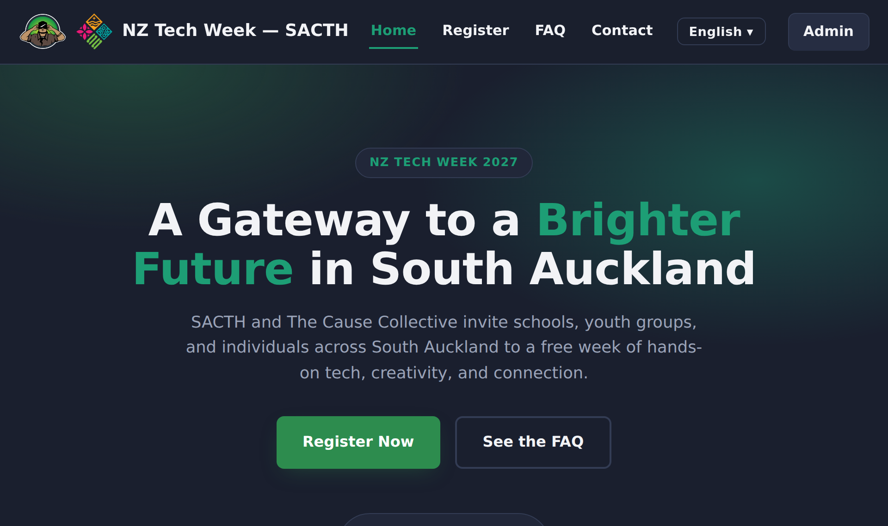
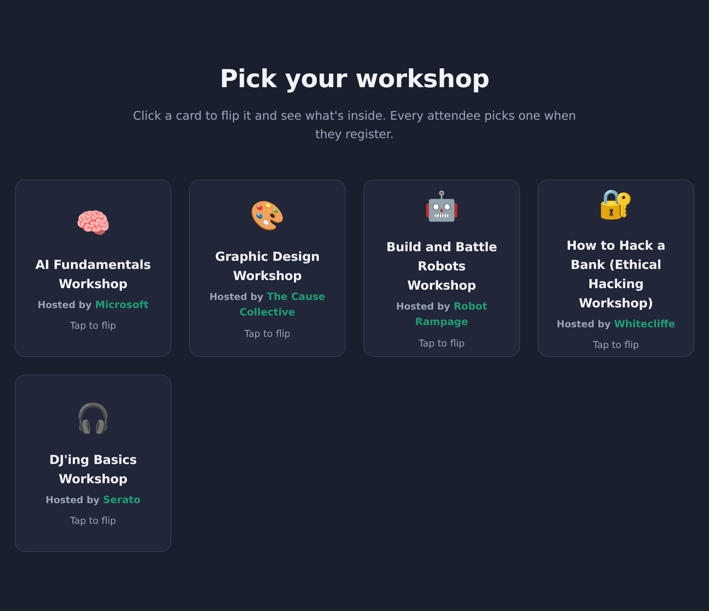
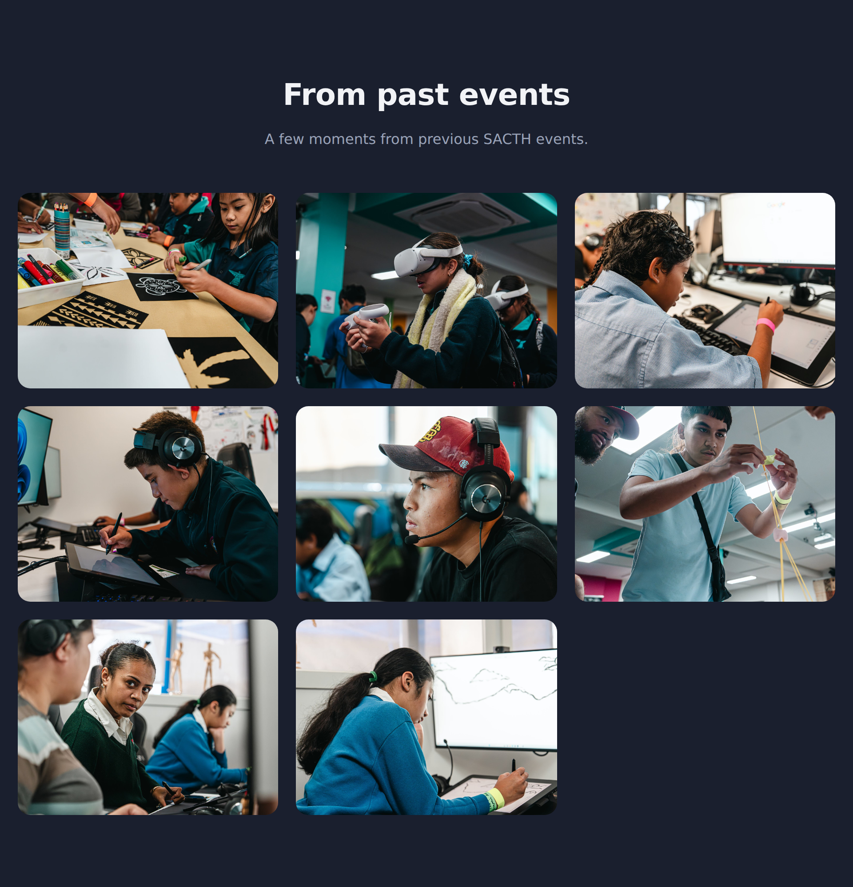
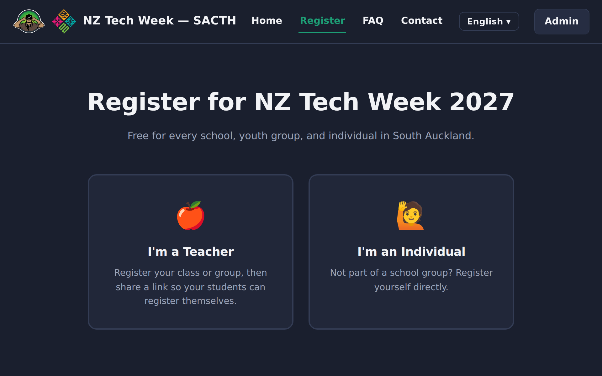
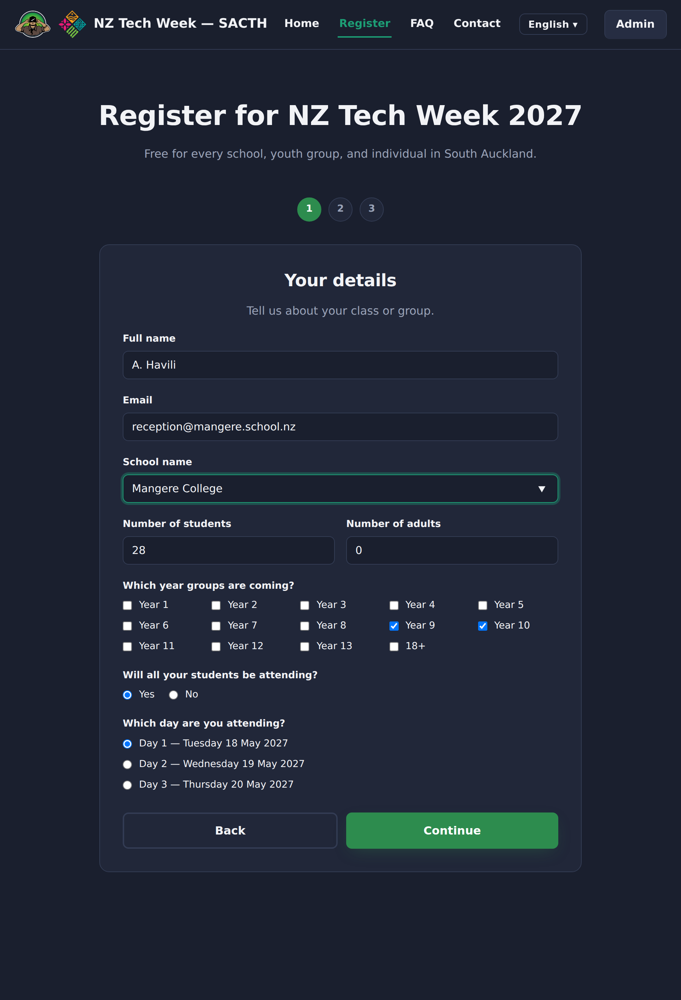
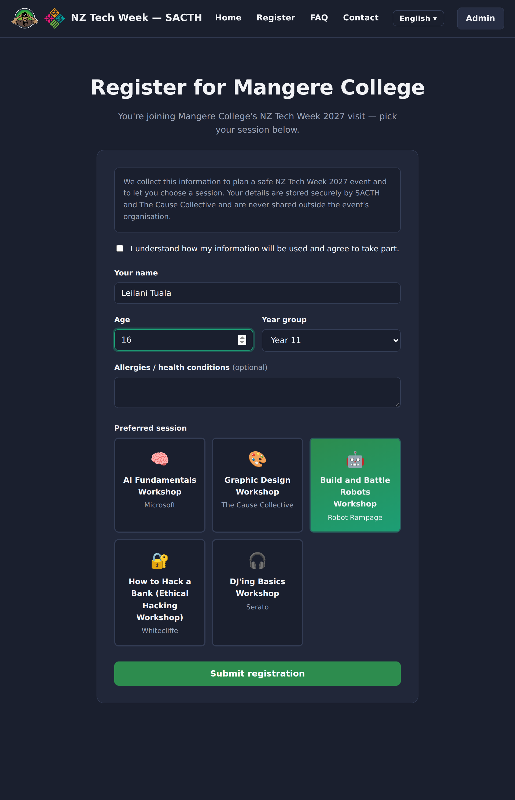
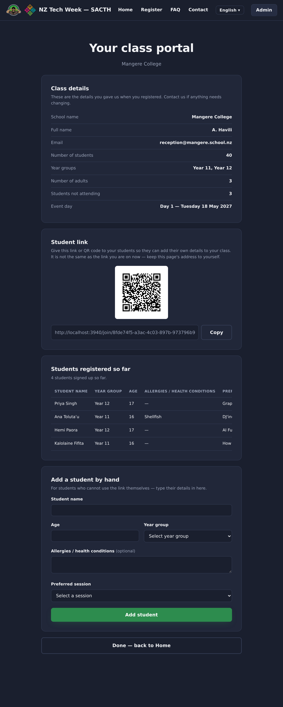
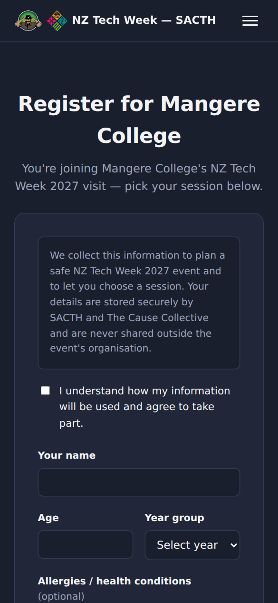
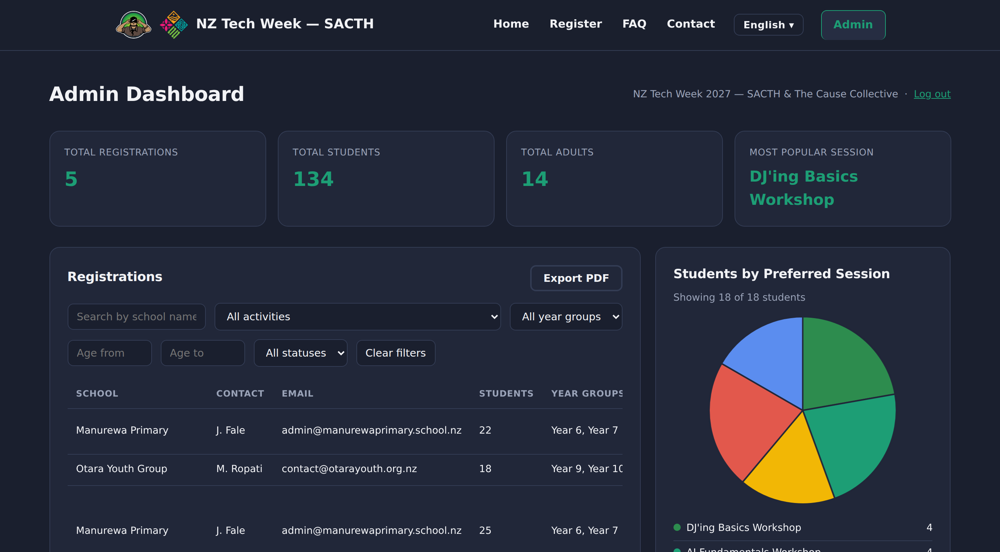
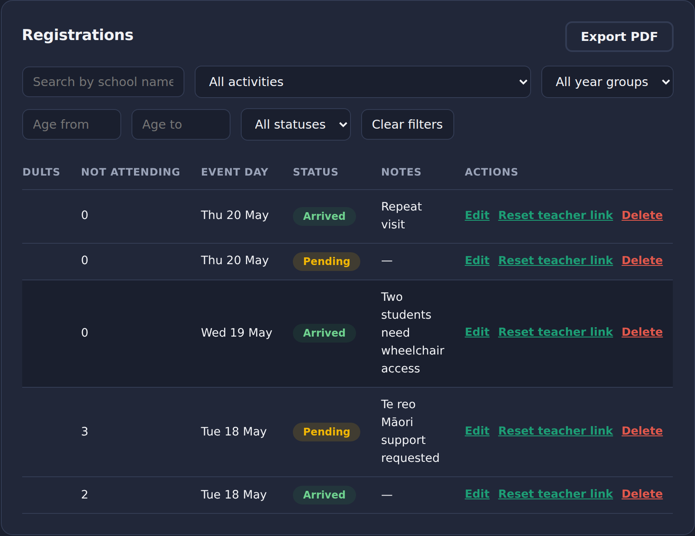
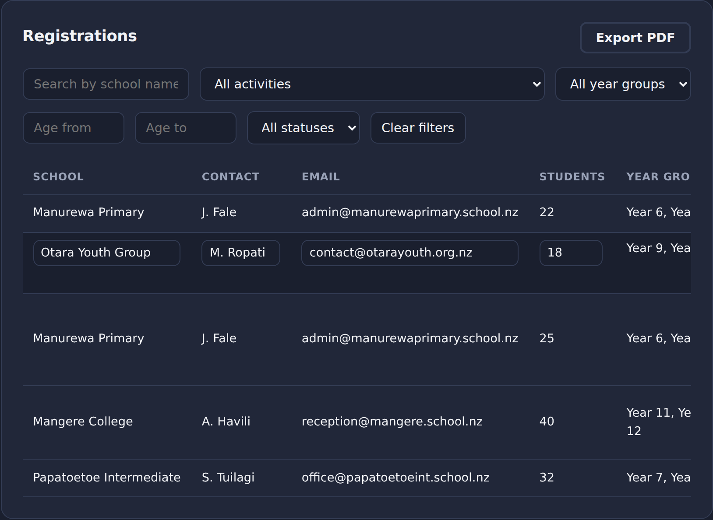
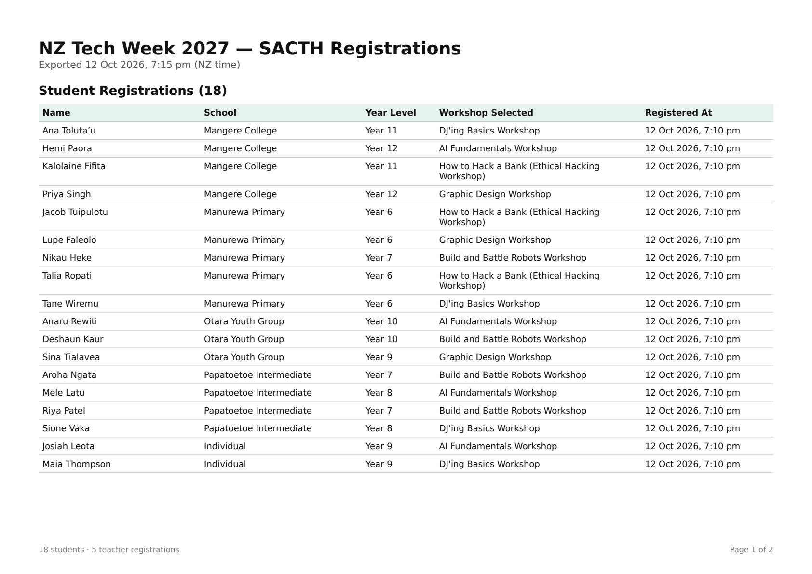
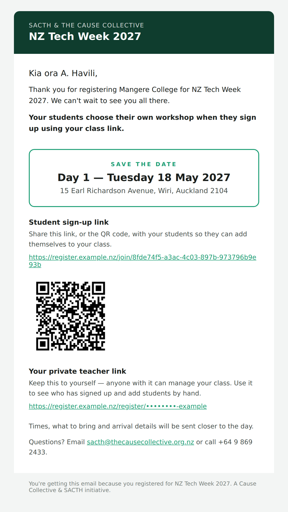
One page for whoever is on the door. Print it out for the day.
/admin.html and enter the admin password.